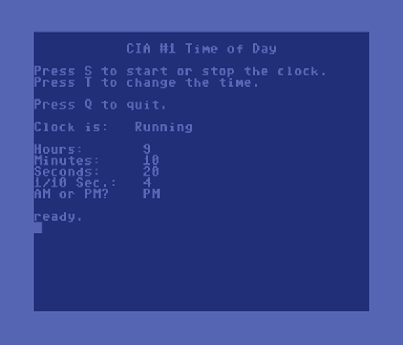

Mike's BASIC Beginnings
Time of Day
March 17, 2021
Screen Shots
Program Listing
Comments

×
1 rem read and set cia time of day clock 2 rem rosetta code commodore 64/128 example 10 print chr$(147);chr$(14) 15 hr=56331:mr=56330:sr=56329:tr=56328:gosub 300 20 print spc(11);"CIA #1 Time of Day" 21 print:print "Press S to start or stop the clock." 22 print "Press T to change the time." 23 print:print "Press Q to quit.":print 25 h=peek(hr):m=peek(mr):s=peek(sr):th=peek(tr):t=h:gosub 200 35 print chr$(19);:for q=1 to 8:print chr$(17);:next q 36 print "Clock is:";tab(12);cl$(b):print 40 print "Hours:";tab(12);h;" " 45 print "Minutes:";tab(12);m;" " 50 print "Seconds:";tab(12);s;" " 55 print "1/10 Sec.:";tab(12);th;" " 60 print "AM or PM? ";tab(13);ap$ 65 get k$:if k$="" then goto 25 70 if k$="s" and b=0 then poke tr,0:b=1:goto 25 75 if k$="s" and b=1 then poke hr,t:b=0:goto 25 80 if k$="t" then gosub 400:goto 20 90 if k$="q" then end 100 goto 25 200 rem decode bcd 210 ap$="AM":if (h and 128)=128 then ap$="PM" 220 s=int((s and 112)/16)*10+(s and 15) 230 m=int((m and 112)/16)*10+(m and 15) 240 h=int((h and 48)/16)*10+(h and 15) 250 return 300 rem decide if clock is running 301 rem latch, read/resume 305 cl$(0)="Stopped":cl$(1)="Running":b=0 310 z=peek(hr):t1=peek(tr) 315 for i=1 to 100:next i 320 z=peek(hr):t2=peek(tr) 325 if t1<>t2 then b=1 330 return 400 rem change clock value 405 print chr$(147) 410 input "Hour";nh$ 415 if val(nh$)<1 or val(nh$)>12 then goto 410 416 if val(nh$)<10 then nh$="0"+nh$ 420 input "Minutes";nm$ 425 if val(nm$)<0 or val(nm$)>59 then goto 420 426 if val(nm$)<10 then nm$="0"+nm$ 430 input "Seconds";ns$ 435 if val(ns$)<0 or val(ns$)>59 then goto 430 436 if val(ns$)<10 then ns$="0"+ns$ 440 print "AM or PM (a,p)? "; 445 get ap$:if ap$<>"a" and ap$<>"p" then 445 446 print ap$ 450 ap=0:if ap$="p" then ap=128 455 rem convert input to bcd 457 ns=val(mid$(ns$,1,1))*16+val(mid$(ns$,2,1)) 460 nm=val(mid$(nm$,1,1))*16+val(mid$(nm$,2,1)) 465 nh=val(mid$(nh$,1,1))*16+val(mid$(nh$,2,1)) 470 nh=nh+ap 475 rem now set values into clock 480 poke hr,nh:rem set hour stops clock 485 poke mr,nm:rem set minute 490 poke sr,ns:rem set second 495 poke tr,0 :rem set 1/10 starts clock 497 b=1 499 print chr$(147):return
The goal of this program is to demonstrate displaying and modifying the system time of day clock. I actually wrote two different programs because there are two different ways the Commodore 64 can keep time.
The common method is to use the software-based clock built into the operating system and made available to BASIC through two special variables. TI$ (TIME$) will provide a string in the format of HHMMSS. The TI (TIME) variable is an integer representing the number of "jiffies" (1/60 second). Both start counting at "000000" (midnight) and without any other initialization report time elapsed since power-on or reset.
The problem with using the software-based clock is that it relies on interrupts that are sometimes switched off or bypassed during I/O access (disk/tape access, serial port operations, etc.) so the clock will lose accuracy.
Meanwhile, the MOS 6526 Complex Interface Adapter (CIA) chips—which provide the I/O interface and integration—each feature two time-of-day clocks (hardware-based) that operate independently of the system, and can actually generate their own system interrupts under certain conditions. (There are alarms available for each clock.) This program demonstrates how one of these clocks can be used.